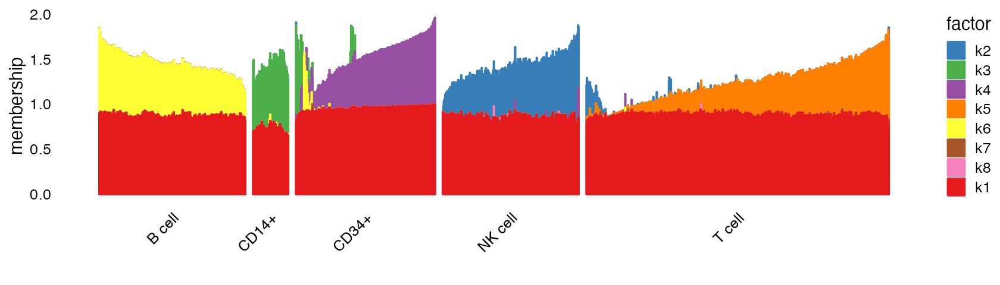
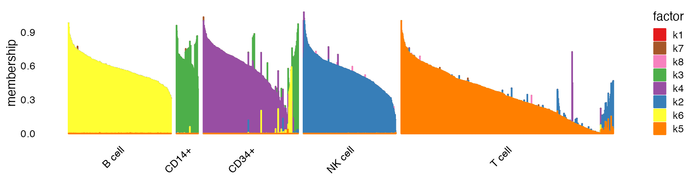

Analysis of single-cell RNA-seq data using flashier
Source:vignettes/flashier_single_cell.Rmd
flashier_single_cell.RmdThe aim of this vignette is show how flashier can be used to analyze single-cell RNA-seq data. This vignette is modeled after the fastTopics vignette on analyzing single-cell data.
We begin by loading the required packages. We also set the seed so that results can be fully reproduced.
library(Matrix)
library(MatrixExtra)
library(reshape)
library(flashier)
library(fastTopics)
library(ggplot2)
library(cowplot)
set.seed(3)Preparing the single-cell data for flashier
The single-cell RNA-seq data (we use the pbmc_facs data
from the fastTopics package) are unique molecular
identifier (UMI) counts stored as an \(n
\times p\) sparse matrix, where \(n\) is the number of cells and \(p\) is the number of genes:
Since the flashier model, like other linear-model-based methods (e.g., principal components analysis), was not designed for count data, it is recommended to first transform the data in a way that makes them more suitable for flashier. A widely-used approach is to divide the counts by a “size factor,” add a “pseudocount,” then take the log. We call this transformation the “shifted logarithm,” following this paper, and we refer to the transformed counts as “shifted log counts”.
In practice, the shifted log counts are computed as follows: we first divide the counts by \(\alpha s_i\), where \(s_i\) is the size factor for cell \(i\), and \(\alpha\) is the pseudocount. Done this way, the shifted log counts maintain sparsity in the data; that is, if the original count is zero, then the shifted log count is also zero.
More formally, the transformed counts \(y_{ij}\) obtained from the original counts \(x_{ij}\) are \[ y_{ij} = \log\bigg(1 + \frac{x_{ij}}{\alpha s_i}\bigg). \] In our analysis below, we use library-size normalization; that is, we set \[ s_i = \frac{\text{total count for cell} \; i} {\text{average across all cells}} = \frac{\sum_{j=1}^p x_{ij}} {\frac{1}{n}\sum_{i=1}^n \sum_{j=1}^p x_{ij}}, \] and we set the pseudocount \(\alpha\) to 1.
a <- 1
size_factors <- rowSums(counts)
size_factors <- size_factors / mean(size_factors)
shifted_log_counts <- mapSparse(counts / (a * size_factors), log1p)Note that to perform the log1p calculations efficiently
on a sparse matrix, we used the mapSparse function from the
MatrixExtra package.
Variance regularization
Before we run flashier, one issue we need to confront is that flashier may automatically estimate the variances to be too small, which can especially be an issue for genes with low expression. We can avoid this issue by setting a sensible lower bound on the variance estimates.
We use the following rule of thumb: estimate the standard deviation of the transformed data for a Poisson random variable with rate \(\mu = 1 / n\), where \(n\) is the number of samples. This standard deviation corresponds to a gene for which we would expect to observe a single count across all \(n\) cells, so it can serve as a reasonable lower bound to prevent variance estimates from getting too small.
Fit a flashier model
Now we can call flash to fit a flashier model to the transformed data:
fit <- flash(shifted_log_counts,
ebnm_fn = ebnm_point_exponential,
var_type = 2,
greedy_Kmax = 8,
S = s1)
#> Adding factor 1 to flash object...
#> Adding factor 2 to flash object...
#> Adding factor 3 to flash object...
#> Adding factor 4 to flash object...
#> Adding factor 5 to flash object...
#> Adding factor 6 to flash object...
#> Adding factor 7 to flash object...
#> Adding factor 8 to flash object...
#> Wrapping up...
#> Done.
#> Nullchecking 8 factors...
#> Done.A few notes about this flash call:
ebnm_fn = ebnm_point_exponentialforces both the \({\bf L}\) and \({\bf F}\) matrices in flashier to be non-negative, so this call will generate a non-negative matrix factorization (NMF) of the (transformed) counts matrix. Other types of matrix factorization can be produced with different choices of theebnm_fnargument; this is explained in detail in the “Introduction to flashier” vignette.var_type = 2means that we estimate column-wise (here, gene-wise) variances; that is, we estimate a different variance for each column (gene).greedy_Kmax = 8forces flashier to fit no more than 8 factors. In practice we recommend using a larger value, but to keep the example simple and short we set it to 8 here.
Visualizing the memberships
Each cell in the single-cell data set is represented as a convex combination of the \(K\) factors. The estimated “membership levels”, or “memberships”, are stored in the \({\bf L}\) matrix. For example:
cell_ids <- c("GATATATGTCAGTG-1-b_cells",
"GACAGTACCTGTGA-1-memory_t",
"TGAAGCACACAGCT-1-b_cells")
round(fit$L_pm[cell_ids, ], digits = 3)
#> [,1] [,2] [,3] [,4] [,5] [,6] [,7] [,8]
#> GATATATGTCAGTG-1-b_cells 0.562 0 0 0 0.001 0.487 0 0
#> GACAGTACCTGTGA-1-memory_t 0.636 0 0 0 0.247 0.000 0 0
#> TGAAGCACACAGCT-1-b_cells 0.617 0 0 0 0.000 0.211 0 0The first and third cells mainly have membership in factors 1 and 6, whereas the second cell mostly has membership in factors 1 and 5. Most of the memberships are zero.
We can use a “structure plot” to visualize the relationship between the memberships and the cell labels, and possibly get some clues about the biological meaning of the factors. The cell labels are the “sorted” cell subpopulations:
summary(pbmc_facs$samples$subpop)
#> B cell CD14+ CD34+ NK cell T cell
#> 767 163 687 673 1484A structure plot is a stacked bar plot in which each factor is
represented as a bar of a different color, and the bar heights are given
by the membership levels. For a more effective visualization, we
recommend extracting a rescaled version of the memberships using the
ldf function (note that we can scale factors \(F_{\cdot k}\) by any constant \(c\) while also scaling the corresponding
loadings \(L_{\cdot k}\) by \(1/c\) without changing the low-rank
representation \(LF'\)):
res <- ldf(fit, type = "i")Now we can visualize the rescaled memberships in a structure plot. We
create a simple wrapper that converts the flashier results into an
object that is usable by the structure_plot() function from
the fastTopics package:
flashier_structure_plot <- function (ldf, topics, grouping) {
class(ldf) <- c("multinom_topic_model_fit", "list")
p <- structure_plot(ldf, topics = topics, grouping = grouping, gap = 20) +
labs(y = "membership", color = "factor", fill = "factor")
return(p)
}
flashier_structure_plot(res, c(2:8, 1), pbmc_facs$samples$subpop)
The first factor is present in all cell types, and is likely capturing a “baseline” level of expression throughout. To focus on differences between cell types, let’s remove this first factor from our structure plot:
flashier_structure_plot(res, 2:8, pbmc_facs$samples$subpop)
It is quite clear from this structure plot that factors 2–6 are capturing, respectively, natural killer (NK) cells, CD14+ cells, CD34+ cells, T cells and B cells. There is also more subtle structure captured by the memberships, such as the subset of T cells with mixed memberships (factors 2 and 5, colored blue and orange in the plot), which suggest a function that is intermediate between that of “pure” T and NK cells. It is also interesting to note the subset of CD34+ cells that are primarily loaded on factors 3 or 6 (yellow and green): some of these cells may be mislabeled; others may have a hybrid function.
We can also visualize the memberships with a heatmap:
flashier_heatmap <- function (L, grouping, gap = 0) {
k <- ncol(L)
colnames(L) <- paste0("k",1:k)
rows <- order(grouping)
pdat <- melt(as.data.frame(L[rows,]),variable_name = "factor")
pdat <- cbind(pdat,grouping = grouping[rows])
pdat <- cbind(pdat,pos = 1:n + gap*as.numeric(pdat$grouping))
return(ggplot(pdat,aes(x = factor,y = pos,fill = value)) +
geom_tile(width = 0.8) +
scale_fill_gradient(low = "white",high = "darkblue") +
scale_y_continuous(breaks = tapply(pdat$pos,pdat$grouping,mean)) +
labs(y = "",fill = "membership") +
theme_cowplot(font_size = 10))
}
flashier_heatmap(res$L,pbmc_facs$samples$subpop,gap = 50)
Factors capture patterns of relative expression
Each factor is represented as a vector of \(m\) expression levels (one for each gene). All of the factors are stored in an \(m \times K\) matrix. The entries of this matrix approximately represent the log-fold change (LFC) of a given gene in a given factor.
For the scaled factor matrix, the entries can be interpreted as the log-fold-change of a given gene in a given factor if a sample has a membership level of 1 for that factor.
dim(fit.nn$F_pm)As mentioned previously, the first factor is often interpreted as an intercept factor. It is usually loaded on all of the samples, and its expression levels across genes is relatively ‘flat’, i.e. there isn’t a subset of genes that are more highly-expressed.
Other factors may have (relatively) high levels of expression in only a subset of genes. In addition, genes may be highly expressed in only a subset of factors. For example, genes CD79A and CD79B are important to B cells, and thus we would expect them to have higher expression in factor 6.
genes <- pbmc_facs$genes
rbind(fit.nn$F_pm[genes$symbol == "CD79B",],
fit.nn$F_pm[genes$symbol == "CD79A",])Annotating topics by differentially expressed genes
When interpreting the factors, we can look at the top driving genes for each factor. For example, for a given factor, we can find the genes with the top 10 highest expression levels.
get_top_genes <- function(fit, threshhold = 2, rowname_F){
FF <- fit$F_pm
LL <- fit$L_pm
Fnorm <- t(t(FF)*apply(LL,2,max))
rownames(Fnorm) <- rowname_F
top_genes_list <- list()
for (k in 1:ncol(Fnorm)){
cur.genes <- rownames(Fnorm)[Fnorm[, k] > log(threshhold)]
F.tmp <- Fnorm[cur.genes,]
cur.genes <- rownames(F.tmp)[order(F.tmp[, k], decreasing = TRUE)] #re-order the genes
lfc <- round(Fnorm[cur.genes, k], 3)
dat <- data.frame(gene=cur.genes, lfc=lfc)
rownames(dat) <- 1:nrow(dat)
top_genes_list[[k]] <- dat # add the dataframe to the list of top driving genes
}
names(top_genes_list) <- paste0('Factor', c(1:ncol(Fnorm)))
return(top_genes_list)
}These are the top genes for factor 6:
top_genes_list <- get_top_genes(fit.nn, rowname_F = genes$symbol)
print(top_genes_list[[6]][1:10,])We can also visualize the top genes for a given factor with a volcano plot. A volcano plot is a type of scatter plot. On the x-axis, we plot the log-fold-change in expression levels for a given gene in a given factor. On the y-axis, we plot the mean expression level of the given gene across all cells in the (transformed) data matrix.
volcano_plot <- function(gene, lfc, z, lfsr, k){
pdat <- data.frame(gene = gene,
lfc = lfc[,k],
z = abs(z),
lfsr = lfsr[,k],
stringsAsFactors = FALSE)
pdat <- transform(pdat,lfsr = cut(lfsr, c(-1,0.001,0.01,0.05,Inf)))
rows <- with(pdat, which(!(abs(lfc) > quantile(abs(lfc),0.999))))
pdat[rows, "gene"] <- ""
p <- ggplot(pdat, aes(x = lfc, y = z, color = lfsr, label = gene)) +
geom_point() +
geom_text_repel(color = "black", size = 2.3, segment.color = "black",
segment.size = 0.25, min.segment.length = 0,
max.overlaps = Inf, na.rm = TRUE) +
scale_color_manual(values = c("coral","orange","gold","deepskyblue")) +
labs(x = "log-fold change", y = "mean expression level") +
theme_cowplot(font_size = 10)
print(p)
}This is the volcano plot for factor 6:
z <- (1/nrow(shifted_log_counts))*colSums(shifted_log_counts)
volcano_plot(genes$symbol, fit.nn$F_pm, as.matrix(z, ncol = 1), fit.nn$F_lfsr, 6)We see that the top 10 most highly-expressed genes for factor 6 are identified in the volcano plot.
Session info
This is the version of R and the packages that were used to generate these results.
sessionInfo()
#> R version 4.3.3 (2024-02-29)
#> Platform: aarch64-apple-darwin20 (64-bit)
#> Running under: macOS Sonoma 14.4.1
#>
#> Matrix products: default
#> BLAS: /Library/Frameworks/R.framework/Versions/4.3-arm64/Resources/lib/libRblas.0.dylib
#> LAPACK: /Library/Frameworks/R.framework/Versions/4.3-arm64/Resources/lib/libRlapack.dylib; LAPACK version 3.11.0
#>
#> locale:
#> [1] en_US.UTF-8/en_US.UTF-8/en_US.UTF-8/C/en_US.UTF-8/en_US.UTF-8
#>
#> time zone: America/Chicago
#> tzcode source: internal
#>
#> attached base packages:
#> [1] stats graphics grDevices utils datasets methods base
#>
#> other attached packages:
#> [1] cowplot_1.1.3 ggplot2_3.5.0 fastTopics_0.6-165 flashier_1.0.23
#> [5] magrittr_2.0.3 ebnm_1.1-25 reshape_0.8.9 MatrixExtra_0.1.15
#> [9] Matrix_1.6-5
#>
#> loaded via a namespace (and not attached):
#> [1] gtable_0.3.4 softImpute_1.4-1 xfun_0.42
#> [4] bslib_0.6.1 htmlwidgets_1.6.4 ggrepel_0.9.5
#> [7] lattice_0.22-5 quadprog_1.5-8 vctrs_0.6.5
#> [10] tools_4.3.3 generics_0.1.3 parallel_4.3.3
#> [13] tibble_3.2.1 fansi_1.0.6 highr_0.10
#> [16] pkgconfig_2.0.3 data.table_1.15.2 SQUAREM_2021.1
#> [19] desc_1.4.3 RcppParallel_5.1.7 lifecycle_1.0.4
#> [22] truncnorm_1.0-9 farver_2.1.1 compiler_4.3.3
#> [25] stringr_1.5.1 progress_1.2.3 textshaping_0.3.7
#> [28] munsell_0.5.0 RhpcBLASctl_0.23-42 htmltools_0.5.7
#> [31] sass_0.4.8 lazyeval_0.2.2 yaml_2.3.8
#> [34] plotly_4.10.4 crayon_1.5.2 pillar_1.9.0
#> [37] pkgdown_2.0.7 jquerylib_0.1.4 tidyr_1.3.1
#> [40] uwot_0.1.16 cachem_1.0.8 trust_0.1-8
#> [43] gtools_3.9.5 tidyselect_1.2.0 digest_0.6.34
#> [46] Rtsne_0.17 stringi_1.8.3 dplyr_1.1.4
#> [49] purrr_1.0.2 ashr_2.2-64 labeling_0.4.3
#> [52] splines_4.3.3 fastmap_1.1.1 grid_4.3.3
#> [55] colorspace_2.1-0 cli_3.6.2 invgamma_1.1
#> [58] utf8_1.2.4 withr_3.0.0 prettyunits_1.2.0
#> [61] scales_1.3.0 float_0.3-2 horseshoe_0.2.0
#> [64] httr_1.4.7 rmarkdown_2.26 deconvolveR_1.2-1
#> [67] hms_1.1.3 ragg_1.2.7 pbapply_1.7-2
#> [70] memoise_2.0.1 evaluate_0.23 knitr_1.45
#> [73] viridisLite_0.4.2 irlba_2.3.5.1 rlang_1.1.3
#> [76] Rcpp_1.0.12 mixsqp_0.3-54 glue_1.7.0
#> [79] jsonlite_1.8.8 R6_2.5.1 plyr_1.8.9
#> [82] systemfonts_1.0.6 fs_1.6.3